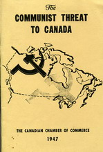

1947 The Communist Threat to Canada
Created Friday 20 November 2020
@2020 @communism
To combat the single most popular policy in Canadian history.
1965 - Nine months before the universal healthcare system came to be, comedian Dave Broadfoot joked, “It’s going to be very exciting if ... we have socialism in Canada. It’s going to be very exciting watching the U.S. marines arrive.”
Universal healthcare in Canada was first offered regionally. Some provinces instigated programs, other provinces did not. It was similar to the modern evolution of marijuana decriminalization in the United States. Saskatchewan was the first province to socialized healthcare...
The leader of Saskatchewan's Liberal opposition condemned the plan. He said, "In a country like ours, it is impossible to sell socialism. Knowing this the [provincial government] has planned a campaign which will employ the established tactics of Marx of arousing class hatred."
See also doctors' strike https://en.m.wikipedia.org/wiki/Saskatchewan_doctors%27_strike
https://www.connexions.org/CxLibrary/CX7364.htm

The Communist Threat to Canada
Canadian Chamber of Commerce
Publisher: New Hogtown Press, Toronto, Canada
Year Published: 1973 First Published: 1947
Pages: 40pp
Dewey: 329.020971
Resource Type: Book
Cx Number: CX7364
A 1973 reprint of a sensationalist pamphlet published by the Canadian Chamber of Commerce in 1947.
Abstract:
-
Table of Contents
- Foreword
- The Communist Threat to Canada
- Revolution Feverishly Active Today
- Findings of The Spy Probe
- Military Power and Communism
- Propaganda and the Press
- Innocents abroad
- Canadian and Soviet Standards
- Comparative Rights and Privileges
- The Treatment of Religion
- Infiltrating Labour Unions
- Naming Some Canadian Communists
- How to Identify a Crypto-Communist
- Freedom Versus Tyranny
- Appendix I
- Appendix II
- Bibliography